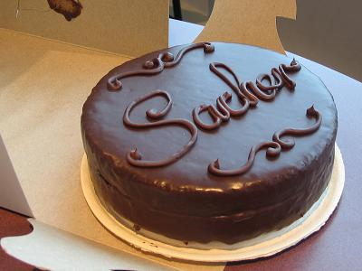

Sacher torta
 Sastojci
Za biskvit:
75 g šećera
1 vrećica
Vanilin šećer
145 g maslaca
6 jaja
150 g čokolade za kuhanje
prstohvat soli
50 g šećera u prahu
150 g pšeničnog oštrog brašna
1 žličica praška za pecivo
Za premaz:
200 g marmelade od marelica
Za glazuru:
60 g maslaca
200 g čokolade za kuhanje
Priprema
U višu posudu stavite šećer, vanilin šećer i omekšali maslac i električnom miješalicom pjenasto izmiješajte. Dodajte žumanjke i ponovo dobro izmiješajte.
Čokoladu otopite na pari i lagano je ulijevajte u pripremljenu smjesu neprestano miješajući.
Bjelanjke posolite i istucite u čvrsti snijeg, pa dodajte šećer u prahu i ponovo dobro istucite.
Trećinu snijega kuhačom lagano umiješajte u pripremljenu smjesu, a u ostatak snijega lagano, ali temeljito umiješajte brašno pomiješano s praškom za pecivo, pa i njega lagano umiješajte u smjesu.
Kalup za tortu promjera 22 cm premažite maslacem i ravnomjerno pospite brašnom. Ulijte pripremljenu smjesu, poravnajte je i pecite 45-50 minuta na 180 °C.
Pečenu tortu pustite da se ohladi u kalupu, pa je prerežite vodoravno na dva dijela.
Marmeladu zagrijte na laganoj vatri dok se ne otopi. Polovicu marmelade prelijte po doljnjoj polovici torte, poklopite gornjim dijelom i premažite ostatkom marmelade. Tortu stavite u hladnjak na 30-ak minuta.
Maslac rastopite na laganoj vatri, lagano miješajte dok ne zakipi, a kad postane proziran i počne se pjeniti maknite ga s vatre. Dodajte čokoladnu natrganu na komadiće i miješajte dok se čokolada u potpunosti ne otopi.
Gotovu glazuru prelijte preko torte i ostavite da se čokolada malo stvrdne. Tortu stavite u hladnjak na 2-3 sata.